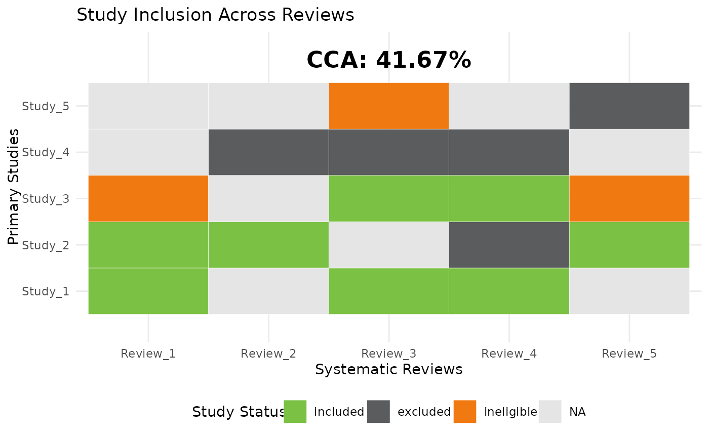

Calculate Corrected Covered Area (CCA) and Generate a Heatmap
cca_heatmap.RdThis function calculates the Corrected Covered Area (CCA) for a set of studies across systematic reviews and generates a heatmap of study inclusion.
Value
A list with:
CCA(numeric): The Corrected Covered Area value.plot(ggplot object): The heatmap (ifshow_plot = TRUE).
References
Pieper, D., Antoine, S. L., Mathes, T., Neugebauer, E. A., & Eikermann, M. (2014). Systematic review finds overlapping reviews were not mentioned in every other overview. Journal of Clinical Epidemiology, 67(4), 368–375. doi:10.1016/j.jclinepi.2013.11.007
Hedges, L. V., & Olkin, I. (1988). Statistical Methods for Meta-Analysis. Academic Press.
Examples
library(tidyverse)
#> ── Attaching core tidyverse packages ──────────────────────── tidyverse 2.0.0 ──
#> ✔ dplyr 1.1.4 ✔ readr 2.1.5
#> ✔ forcats 1.0.0 ✔ stringr 1.5.1
#> ✔ ggplot2 3.5.1 ✔ tibble 3.2.1
#> ✔ lubridate 1.9.4 ✔ tidyr 1.3.1
#> ✔ purrr 1.0.4
#> ── Conflicts ────────────────────────────────────────── tidyverse_conflicts() ──
#> ✖ dplyr::filter() masks stats::filter()
#> ✖ dplyr::lag() masks stats::lag()
#> ℹ Use the conflicted package (<http://conflicted.r-lib.org/>) to force all conflicts to become errors
library(junoR)
# Example dataset
data <- tibble(
study = rep(paste0("Study_", 1:5), times = 5),
review = rep(paste0("Review_", 1:5), each = 5),
status = c("included", "included", "ineligible", NA, NA,
NA, "included", NA, "excluded", NA,
"included", NA, "included", "excluded", "ineligible",
"included", "excluded", "included", "excluded", NA,
NA, "included", "ineligible", NA, "excluded")
)
# Run function
result <- cca_heatmap(data)
print(result$CCA)
#> [1] 41.66667
print(result$plot)
